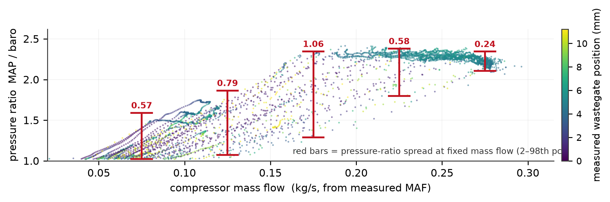

Why bother
Tuning an engine means choosing spark advance, fuel targets and boost pressure across the whole operating range. You want as much torque as you can get without detonation. The awkward part is that testing any one candidate costs a dyno pull, and being wrong can destroy the engine. A model that predicts torque and knock margin at points you have never actually run would let you narrow things down before touching the car. That only works if the model's internals mean something, though. A pure curve fit will cheerfully give you a number for an operating point well outside its training data, and the number will be wrong.
So neither obvious option is much good on its own. Black-box regression has nothing in it that forces conservation of mass. A full physical mean-value model does, but calibrating one needs compressor maps, turbine maps and volumetric efficiency surfaces that a consumer datalog simply does not contain. The universal differential equation approach splits the two apart. I write the ODE skeleton myself (manifold filling, a compressible-orifice throttle, the turbo shaft power balance) and never fit it, and small networks stand in for the parts I genuinely do not know. I assumed the fixed physics would constrain the learned parts. It does, but much less than I expected, and finding that out was most of the project.

What went wrong the first time
The first version trained without any trouble. Every window solved, and held-out manifold pressure came out at 9.8 kPa RMSE on a signal covering about 100 kPa. I thought I was finished. Then I printed the internal quantities.
| Internal quantity | Fitted | Physically possible | Why it cannot be right |
|---|---|---|---|
| Volumetric efficiency at WOT | 1.06 | ~0.77 | more air entering the cylinder than the cylinder displaces |
| Turbo speed at full boost | ~1,300 rad/s | 11,000–17,000 | nothing making 1.5 bar turns that slowly |
| Compressor pressure-ratio curve | flat | peaks near 1.8 | no flow characteristic at all |
| Exhaust backpressure | 112 kPa | above boost | turbine driven backwards by the compressor it powers |
None of these are merely inaccurate. They are impossible. The fit still came out fine because the errors cancel each other: a low turbo speed gives a low pressure ratio, and an inflated volumetric efficiency then draws in extra air, so the trajectory still lands in the right place.
It took me ten full training runs to accept that. Up-weighting the boost channel, up-weighting the high-boost timesteps and adding a hard airflow constraint all failed, which is decent evidence the problem was structural rather than the loss being unbalanced. One run fixed a real throttle-calibration bug and still left the model worse overall, because taking away one compensation in an under-determined system just relocates it. Volumetric efficiency drifted past its own label instead.
What worked: fitting the maps separately
The fix was to stop solving all of it at once. I fit each map on its own against its own ground truth, offline, in an order where each step has only one unknown left in it. Two of the steps need no fitting at all. Volumetric efficiency is algebra on four measured channels. Boost pressure sits upstream of the throttle and is never logged, but at wide-open throttle the throttle drops only 1.2 kPa, so there it is near enough to the measured manifold pressure.
| Configuration | High-boost error | Volumetric eff. | Airflow (kg/s) | Held-out RMSE |
|---|---|---|---|---|
| Both maps free | −36.6 kPa | 0.885 | 0.190 | 11.48 kPa |
| Volumetric efficiency pinned | −73.7 kPa | 1.06 | 0.182 | 23.62 kPa |
| Both pinned to measured labels | −5.0 kPa | 0.977 | 0.254 | 8.98 kPa |
| measured ground truth | — | ~0.98 | 0.251 | — |
The middle row looks like things got worse. They did not. Volumetric efficiency had been drifting low to absorb roughly half of the boost map's error, so −73.7 kPa is the real size of that error, and the −36.6 in the first row was the same error partly hidden. Pinning both maps removes it.
The model, in five states
| State | Integrated quantity | Observed? | Note |
|---|---|---|---|
| P_m | intake manifold pressure | measured | the one trajectory the model is fit against |
| P_boost | pre-throttle boost pressure | at WOT only | added to break the algebraic boost loop |
| v | turbocharger speed, as a logit | never measured | the logit keeps it inside its physical range without a clamp |
| m_puddle | fuel wall-film mass | never measured | observable only in throttle transients; off on the direct-injection engine |
| T_metal | metal temperature | — | frozen, since it moves over minutes and the windows are 1 second |
The result I am most pleased with
The tail was a bifurcation, not a lag
The worst windows looked like the turbo spooling faster than the model could. They were not. Boost was an algebraic function of cylinder flow, which depends on manifold pressure, so the two fed each other at a loop gain of 0.79. At about 21% of wide-open-throttle points that gain crosses 1.0 and the high-boost equilibrium stops existing, which is the plateau the bad windows sat on. Giving boost its own state, with its steady map keyed on exogenous inputs only, drops the loop gain to zero and guarantees a unique solution. Worst window 69 → 45 kPa, and the first change in the project to improve the bulk and the tail together.
Scoring by regime rather than in aggregate
The log is about 93% cruise and idle by window count, so a single held-out number is dominated by the regime where the ECU already closes the loop. The model exists to predict pulls. A stratified evaluator splits spool, steady pull, part-throttle-on-boost and cruise from the data alone, so the same windows are compared across artifacts. It confirms where the boost state won (steady pull 5.95 → 2.13 kPa, part-throttle-on-boost 30.61 → 23.39) and isolates spool as the next target.
Results
Accuracy
Held-out manifold pressure ends up at 6.12 kPa RMSE over a 9–232 kPa range. Fitting the maps separately got it to 8.98, a calibrated throttle area to 7.65, and the boost-state change took it the rest of the way. On the earlier port-injected engine the same method gave 10.72 kPa held out, and 16.6 kPa on unseen logs.
The original joint fit still has the better number at 9.8 kPa. It is also the worse model, and I would rather report the one whose internals are right and say what that cost.
Checked against independent references
- Volumetric efficiency came out at 0.977 where the measured value is about 0.98, and airflow at 0.254 against a measured 0.251 kg/s.
- On the earlier engine, turbo speed tracks its physics-derived target at correlation 0.948, median ratio 1.013. Before staging it had collapsed flat.
- The compressor map sits within 0.4% of the one recovered from the car's own data, across 2,529 boost points.
A negative result worth keeping
Before the boost state I tried giving the charge volume its own state and having the map produce compressor flow rather than a pressure ratio. I scored the reparametrisation first: held-out R² 0.735 against 0.717, and a 2× win at wide-open throttle. It looked sound.
It railed. The fitted map's dmdot/dPR was positive at 8 of 8 operating points,
because in a road log flow and pressure ratio rise together (both driven by throttle and rpm), and a
network fitted on that correlation learns it as a causal law with the wrong sign. Real compressor speed
lines slope down. Integrated, that gives more boost → more flow → more boost.
The lesson generalises past this model: R² cannot see the sign of a partial derivative. Fitting well and being usable as a causal law inside an integrator are different properties, and the probe only tested the first. Any map that gets integrated rather than evaluated needs a monotonicity check, not just a holdout score. Putting the physics in the activation, so pressure ratio enters analytically and the slope's sign is structural, took it from 8 of 8 wrong to 0 of 8 and validation from 171.5 to 53.0 kPa. It still was not enough, for a reason that is its own result: a compressor keyed only on wastegate position and engine speed is demand-blind.
Tools and methods
Training uses multiple shooting on 1-second windows, Tsit5 for the forward solve, and
interpolating adjoints with reverse-mode vector-Jacobian products for the gradients. Adam runs in two
stages, an MSE warm-start then a Gaussian negative-log-likelihood fine-tune over mean and variance
heads, with ensemble members training one per thread. The result exports to a JSON artifact served from
Python by NumPy and a SciPy root-solve, so inference needs no Julia, and a parity test requires both
implementations to agree bit for bit. That caught two bugs no training metric would have shown.
Constraints live in the architecture rather than the loss: bounded output activations on every map, and
turbo speed carried as a logit.
What I took away from it
- Look at the internals before the metric. The 9.8 kPa result lasted as long as it did because I kept reading a residual and never checked a physical quantity. Three or four assertions (efficiency under 1.0, exhaust pressure above boost, turbo speed in a plausible band) would have caught it on the first run rather than the eleventh.
- Do the identifiability analysis first. Whether the parameters can be recovered at all is structural, and answerable before any training. Run at last, it took under a minute and told me turbine efficiency needs an exhaust temperature probe and a shaft speed sensor together. I had been planning to buy only the probe.
- A probe beats a run. Nearly everything I learned came from evaluating one equation at one operating point, not from training. The bifurcation above was found that way.
- Check what a pipeline produces, not what its source says. Four data-cleaning bugs went undetected, one of them a set of regex literals holding a backspace byte where a word boundary was meant. They rendered correctly in the editor and matched nothing at runtime. Now I cross-check the cleaned output numerically; the strongest of those checks agrees to 0.0014 psi across two conversion paths.
Limits, stated plainly
- Spool is unimproved. Every model built so far sits at roughly 35.8 kPa on spool windows, which are 20 of the 24 pull windows in the log. The boost state wins steady pull and part-throttle on boost and does not move spool. That is the open problem, and oversampling those windows in training is the change now in flight.
- The combustion half is unvalidated. Compressor behavior, volumetric efficiency and cylinder airflow are each checked against something outside the fit. Torque, exhaust temperature and knock are not: no dyno, no usable exhaust-temperature log, weak knock labels.
- No compressor map can be recovered from this log, because shaft speed is never measured independently of pressure ratio, and a two-dimensional surface cannot come from a one-dimensional traverse. The log does carry genuine 2-D information in flow and pressure ratio, as Fig. 1 shows, so it is missing the speed labels rather than the coverage. A turbo speed sensor would produce the first genuinely measured compressor map here, and it is the highest-value instrumentation on the list.
- Which sensors are worth buying is settled algebraically, not guessed. Turbine efficiency needs an exhaust temperature probe and a shaft speed sensor together; neither alone recovers it, a wastegate sweep changes nothing structurally, and a pre-throttle pressure sensor buys nothing. That analysis replaced an earlier plan to buy exactly the wrong instrument.